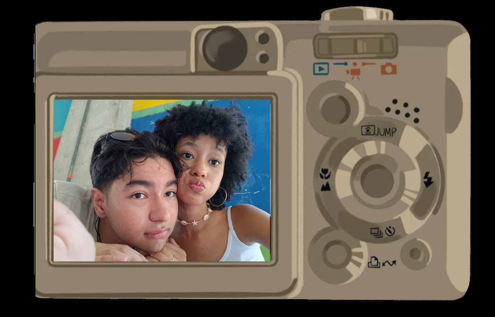

Hola, soy Ivan
Soy un artista tradicional y digital enfocado principalmente en ilustraciones, retratos y paisajes.
Trabajo con diferentes técnicas y disfruto explorar el color y las composiciones orgánicas para crear obras íntimas y expresivas.
A través de cada pieza busco transmitir emociones y construir una identidad artística propia.
- Ilustraciones
- Retratos
- Paisajes
- Arte tradicional
- Arte digital